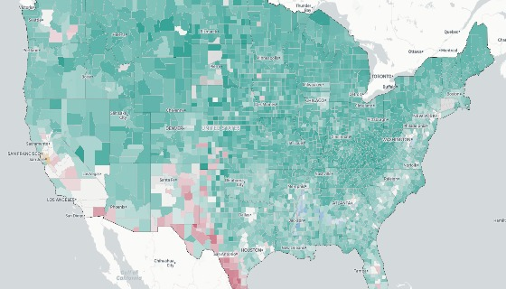
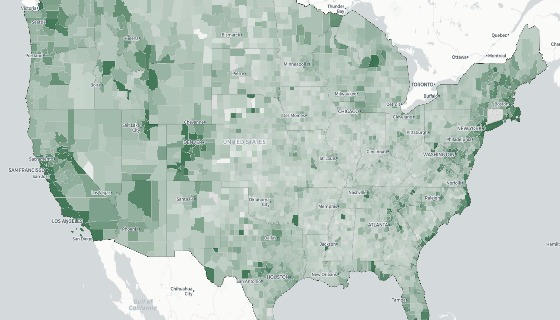

American Housing,
Mapped and Measured
Explore mortgage lending patterns across every census tract, county, and state — drawn from the federal Home Mortgage Disclosure Act database.
Interactive Maps
Drill down from the national level to individual census tracts. Compare mortgage lending patterns by race, income, and geography.

Homebuyers by Race
State, county, and census-tract choropleth maps with income and loan-volume charts. Double-click to drill down.

Homebuyers by Income
Median income of home-purchase loan applicants — choropleth by state, county, or census tract. Explore where high- and low-income buyers are purchasing homes.
Data-Driven Reporting
Analysis that goes deeper into what the data reveals — lending disparities in specific cities, shifts over time, and findings that raw numbers alone don't tell.
Metro Lending Disparities
Which cities have the starkest racial gaps in mortgage originations? A tract-level examination of 20 major metros.
COVID-19 and Mortgage Originations
How the pandemic reshaped who could buy a home — and whether the rebound was evenly distributed across racial groups.
FHA Lending Since 2018
FHA loans disproportionately serve first-time and minority buyers. How has that share shifted — and where is the program shrinking?